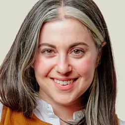

Timothy O’Connell for The New York Times
About Us
New York Times Cooking has thousands of recipes you will love to cook, from easy weeknight dinners to holiday showstoppers. Editor-curated collections make it easy to find the right recipe, and helpful step-by-step visuals make them fun and simple to cook. We publish new recipes and videos every day. Sign up for our free newsletter to see what’s new.
Our Product
Cooking subscribers get exclusive access to our best-in-class app, with our full catalog of more than 22,000 recipes, personalized recommendations and video tutorials. Our recipes include ratings, reviews and useful tips from thousands of other home cooks. And our digital recipe box makes it easy to save favorites, plan meals and organize the dishes you want to try.
Our Values
We value the trust of our readers – in fact, it’s essential to us. Cooking was started in 2014 with the belief that time in the kitchen has the power to make every reader’s life richer and more fulfilling, and we strive to deliver the very best. With that in mind, we test and retest each recipe to make sure it’s accurate and turns out deliciously every time.
Our Writers
Here are the Times reporters and columnists who currently contribute recipes to New York Times Cooking. Among them are award-winning cookbook authors, Pulitzer Prize winners, passionate home cooks and professionals alike.

Melissa Clark
Melissa Clark is a food reporter and columnist for The New York Times and NYT Cooking, for which she creates recipes, hosts videos and is one of the writers of the Cooking newsletter. She’s also written dozens of cookbooks. A native of Brooklyn, she knows where to find the best bagel.

Eric Kim
Eric Kim is a food columnist for The New York Times Magazine and a recipe developer and video host for NYT Cooking. A native of Atlanta, he is also the author of the cookbook “Korean American.”

Yewande Komolafe
Yewande Komolafe is a cooking writer and columnist for The New York Times and a recipe developer and video host for NYT Cooking. She is also the author of the cookbook “My Everyday Lagos.”

Genevieve Ko
Genevieve Ko is a deputy editor of NYT Cooking and Food at The New York Times, where she also writes a column, develops recipes and appears in videos. In addition to writing her own cookbook, she has contributed to more than 20 cookbooks. Born and raised in East Los Angeles, she now lives in New York City and cooks dishes from everywhere.

Kenji López-Alt
J. Kenji López-Alt writes a column for The New York Times on food and science, and he develops recipes and appears in videos for NYT Cooking. He is also the creator and host of Kenji’s Cooking Show on YouTube.

Sohla El-Waylly
Sohla El-Waylly is a food writer who develops recipes and hosts videos for NYT Cooking. She’s been featured on HBO Max, History Channel and the Bon Appétit YouTube channel, and she’s also the author of the cookbook “Start Here.”
Claire Saffitz
Claire Saffitz is a cookbook author, video host and recipe developer. Previously, Claire was a senior food editor at Bon Appétit magazine, where she hosted the series “Gourmet Makes” on the Bon Appétit YouTube channel. She currently hosts her own YouTube channel called Dessert Person.

Priya Krishna
Priya Krishna is a food reporter for The New York Times, and a recipe developer and video host for NYT Cooking. She is the author of multiple cookbooks, and her stories have been included in “The Best American Food Writing.” She is originally from Dallas.